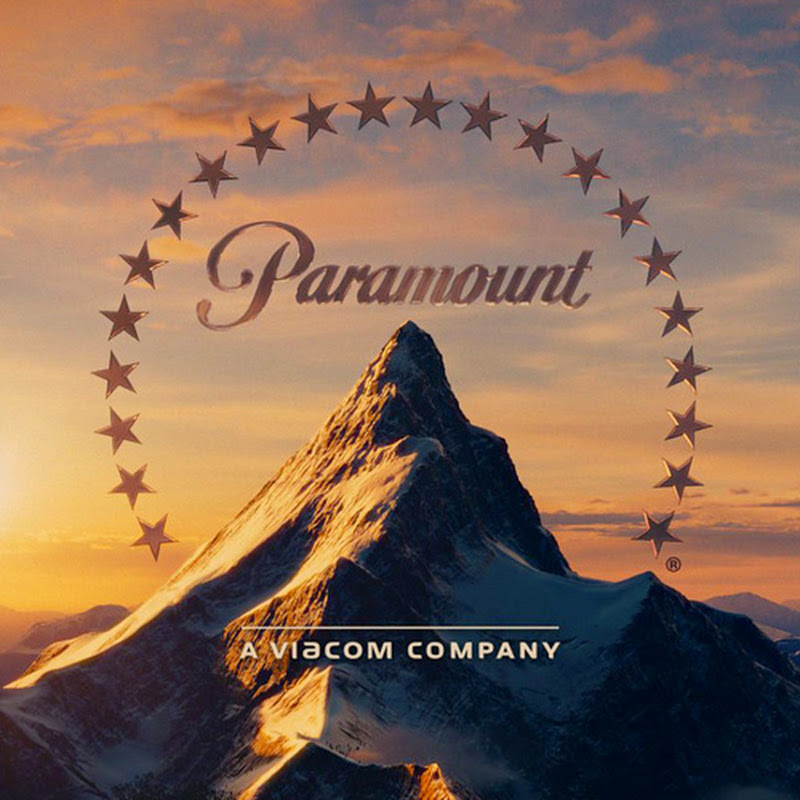

paramount pictures
Цукор верил в кинозвёзд, более того одним из первых слоганов его компании был девиз «Famous Players in Famous Plays». Он подписывал договоры с самыми популярными артистами своего времени, среди которых были Мэри Пикфорд, Дуглас Фэрбэнкс, Глория Свенсон, Рудольф Валентино и Уоллес Рид. Имея в арсенале звёзд такой величины, «Paramount» смогла ввести такое понятие, как «block booking[en]», которое означало, что если владелец кинотеатра желает получить какой-либо фильм со звёздным составом, он должен приобрести для проката в своём кинотеатре в течение года и другие менее масштабные картины «Paramount». Подобная система взаимоотношений смогла, с одной стороны, выдвинуть «Paramount» на лидирующие позиции в бизнесе в 1920—1930-е годы, а с другой стороны, позволила правительству преследовать компанию на основе антимонопольного законодательства в течение более чем 20 лет.
Принимая во внимание падение посещаемости кинотеатров после Второй мировой войны, «Paramount» и другие кинокомпании боролись за сохранение своей аудитории. Однако рядом всегда находились Федеральная торговая комиссия и Министерство юстиции, преследовавшие их по обвинениям об ограничении свободы торговли. В конечном счёте дело было отправлено в Верховный суд и вошло в историю как дело «США против Парамаунт[en]». В мае 1948 года суд согласился с правительством, найдя признаки ограничения свободы торговли, и потребовал разделения производства и показа кино. Компания «Paramount» была разделена надвое: «Paramount Pictures Corporation» по-прежнему занималась производством кинопродукции, предназначенной в том числе и для показа в 1500-экранной киносети, переданной 31 декабря 1948 года в управление новообразованной компании «United Paramount Theatres[en]» (UPT). Сеть кинотеатров Балабана и Катца также вошла в состав «UPT». Ныне торговая марка Балабана и Катца принадлежит историческому фонду Балабана и Катца. Обеспеченный деньгами и контролирующий лучшую городскую недвижимость, глава «UPT» Леонард Голденсон[en] начал искать пути инвестирования средств, исключая из сферы своих интересов лишь производство кино. В феврале 1953 года он сумел приобрести компанию «ABC».
В связи с потерей киносети «Paramount Pictures» пришла в упадок: уменьшила затраты на производство картин, аннулировала контракты со звёздами и делала производство картин все более независимым. К середине 1950-х годов все большие звёзды покинули киностудию, один лишь Де Милль, работавший в «Paramount» с 1913 года, продолжал делать кино в старом стиле. Как и некоторые другие киностудии, «Paramount» видела мало выгоды в сохранении своей фильмотеки. Поэтому, когда актёрское агентство «MCA», оказывавшее большое влияние на политику «Paramount» в то время, предложило $50 млн (выплачиваемых частями в течение многих лет) за 750 картин, произведённых до 1948 года, на студии было решено, что это наилучшее из возможных для «Paramount» решений. В целях учёта антитрастового законодательства «MCA» создала отдельную компанию «EMKA, Ltd.[en]», предназначенную для распространения купленных фильмов на телевидении. В дальнейшем в «MCA» было подсчитано, что в течение последующих 40 лет компания заработала более 1 миллиарда долларов на прокате картин, ранее считавшихся в «Paramount» бесполезными.
Благодаря появлению средств, полученных от продажи в середине 1980-х годов производственных подразделений концерна «G+W», «Paramount» приобрела целую сеть телевизионных станций и тематические парки «KECO Entertainment[en])», переименованные затем в «Paramount Parks[en]». В 1993 году развлекательный конгломерат «Viacom» предложил приобрести «Paramount», чем вызвал начало целой войны с Барри Диллером по покупке компании. В итоге «Viacom» победил, заплатив по итогам торгов 10 миллиардов долларов США за активы «Paramount». В 1995 году «Viacom» совместно с «United Television» запустили «United Paramount Network» (UPN), тем самым осуществив мечту Диллера 1970-х годов о собственной ТВ-сети. В 1999 году «Viacom» выкупил долю «United Television» и передал бразды правления коммерчески неустойчивой сетью более стабильному своему подразделению «CBS».